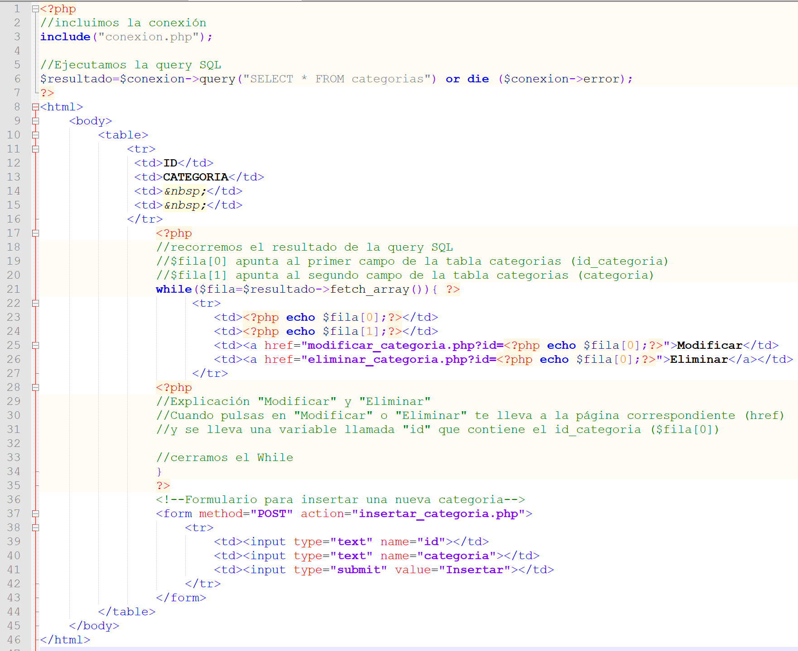
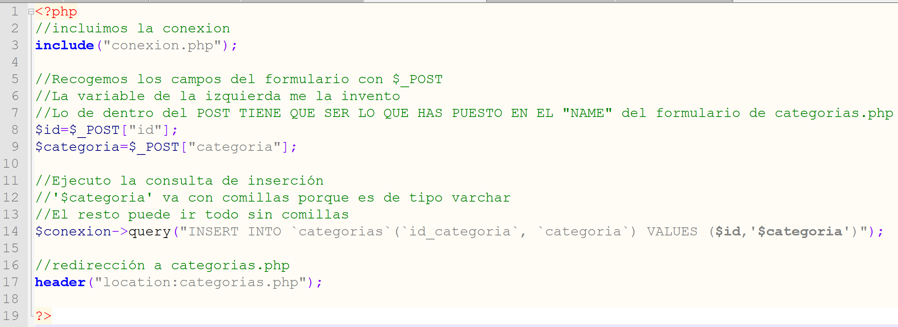
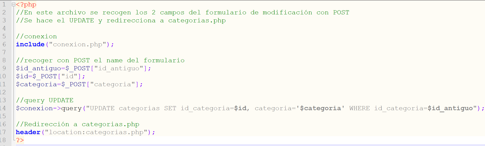

Bienvenidos a la asignatura Base de Datos
CREAR UNA WEB PARA UN JUEGO TIPO TRIVIAL
1. Crear una plantilla simple en html
De momento no hace falta hacer el formulario de login y el footer es opcional. Cuando tengas la cabecera con el menú y enlazados todos los elementos, copia "index.php" y pégalo. Llama a este nuevo archivo "acceso_privado.php"
2. Acceso Privado
NOTA: La base de datos del trivial la puedes importar desde el moodle a tu servidor.
Ahora ya puedes crear el archivo conexion.php para conectar con tu base de datos. La siguiente imagen es mi archivo conexión.php. Tú tendrás que cambiar todos los datos excepto "localhost"
En acceso_privado.php crea un menu nuevo con las opciones de la imagen para gestionar las categorías, preguntas, respuestas y jugadores. Cada uno de estos enlaces te llevará a categorías.php, preguntas.php, respuestas.php y jugadores.php.
Cuando acceso_privado.php tenga el aspecto y funcionalidad del menú indicada, copia el archivo y nómbralo como categorias.php
3. Categorias
Tendrás que crear un archivo conexion.php e incluirlo en categorias.php
Haz una consulta que muestre la tabla categorías y haz el bucle para recorrer dicha tabla. (Ver instrucciones de la imagen de arriba)
ARCHIVOS DE LA CLASE DEL VIERNES 13...
categorias.php
Eliminar categoria

Insertar categoria
Modificar categoria - modificar_categoria.php
Modificar categoria - modificar_cat_ok.php
Una vez hechos y comprendido los archivos anteriores, ya puedes hacer el Ranking, preguntas, respuestas, jugadores...
LOGIN: Acceso privado (login.php)
Todo lo que hay en Acceso privado aparecerá cuando el usuario Administrador inicie sesión. Es decir, cuando hagas click en acceso privado, aparecerá un formulario de incio de sesión.
Este formulario hará un SELECT de la tabla usuarios que previamente deberás crear en tu base de datos.
PAS0 1: Crea la tabla usuarios: id_usuario (autoincrement), usuario varchar(40), password varchar(50)
PASO 2: Cambia el enlace del menú "Acceso Privado" para que apunte a login.php
PASO 3: En login.php haz un formulario con usuario y contraseña que te lleve a login_ok.php
PASO 4: En login_ok.php haz la SELECT sobre la tabla usuarios con los datos introducidos en el formulario. Si el usuario está en la base de datos, te redigirá a acceso_privado.php (este archivo ya lo debería tener hecho)
PASO 5: acceso_privado.php muestra las tablas de la base de datos para gestionar.